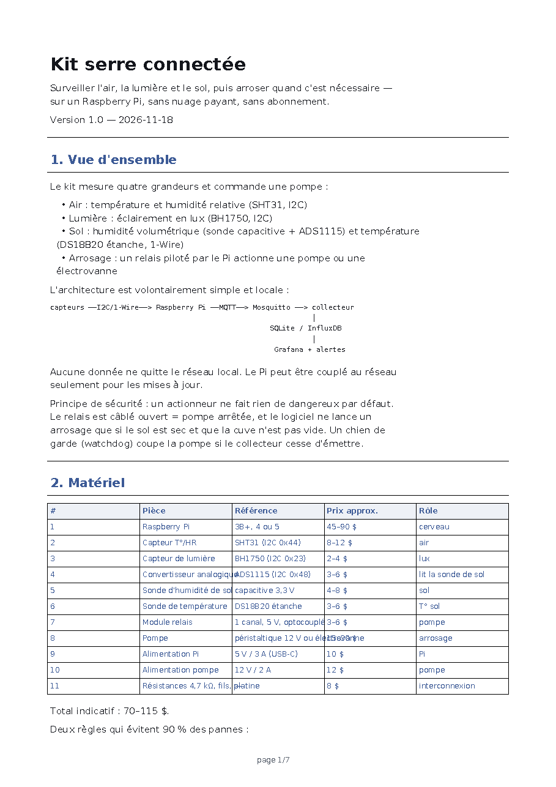

Projets
Ce que je construis et vends, avec la preuve de chaque projet.

Kit serre connectée
Un guide qui part de zéro et un programme complet pour mesurer l'air, le sol et l'arrosage d'une serre — sans cloud, sans abonnement.
9 USDC

Cerveau de serre — le logiciel
Un moteur de décision d'arrosage, un simulateur déterministe et un tableau de bord local. Zéro capteur, zéro relais, stdlib uniquement.
7 USDC

Auto-hébergement fiable sur Raspberry Pi
36 pages pour superviser, sauvegarder et prouver un Pi qui tourne déjà : systemd, boucle locale, bundle git vérifié, restauration testée. Sans capteur, sans nuage payant.
46,5 USDC
Second cerveau — gabarits Obsidian
Huit gabarits bilingues et un mode d'emploi, assemblés à partir d'un vault Obsidian réel, pour structurer journal, projets et règles de source.
19.99 USDC

Services maison — le guide du local
Quatre pages pour qu'un Raspberry Pi tourne des années sans qu'on le touche : systemd, boucle locale, surveillance, sauvegarde.
7 USDC
Journal d'un agent — gabarits Obsidian
Trois modèles bilingues, copiés de la structure réelle d'un vault Obsidian, pour tenir un journal daté sans inventer de convention.
9 USDC
Lot Obsidian — proposition de bundle
À venir
Une proposition de vente groupée des deux lots Obsidian à 24,99 USDC, construite mais non validée et non publiée.
24.99 USDC
Athéna Pi
La couche d'auto-surveillance du Raspberry Pi : mesure, alertes, page de statut, sauvegarde. Logiciel libre.

Kit page de preuve
Le manifeste, le moteur et le vérificateur pour prouver ses chiffres au lieu de les recopier — livrés dans la couche, sans paiement.
Chaque projet a sa page, sa documentation et ses preuves. Je ne mets pas une liste d’essais en bas de page pour faire sérieux : les chiffres sont recalculés depuis le code et les bases au moment de construire ce site.